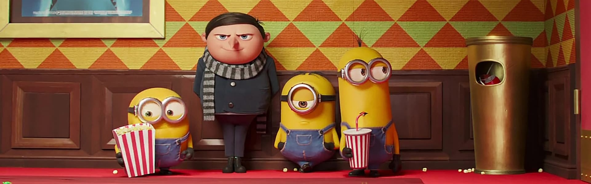

촉망받는 은행 간부 앤디 듀프레인은 아내와 그녀의 정부를 살해했다는 누명을 쓴다. 주변의 증언과 살해 현장의 그럴듯한 증거들로 그는 종신형을 선고받고 악질범들만 수용한다는 지옥같은 교도소 쇼생크로 향한다. 인간 말종 쓰레기들만 모인 그곳에서 그는 이루 말할 수 없는 억압과 짐승보다 못한 취급을 당한다. 그러던 어느 날, 간수의 세금을 면제받게 해 준 덕분에 그는 일약 교도소의 비공식 회계사로 일하게 된다. 그 와중에 교도소 소장은 죄수들을 이리저리 부리면서 검은 돈을 긁어 모으고 앤디는 이 돈을 세탁하여 불려주면서 그의 돈을 관리하는데...
1859년에 창립된 미국의 명문 사립학교인 웰튼 고등학교의 새 학기를 맞아 신입생들도 들어오고, 이 학교 출신인 새로운 영어 교사 존 키팅(로빈 윌리엄스)도 부임한다. 키팅 선생은 학생들에게 관습에 맞서고 자신의 삶을 남다르게 가꾸라며 새로운 학습 방법으로 학생들을 지도하며 학생들에게 신선한 충격을 준다. 닐(로버트 숀 레오나드)은 키팅 선생을 캡틴이라 부르며 따르게 되고, 몇몇 학생들과 함께 죽은 시인의 사회라는 시낭독 클럽을 조직한다. 닐과 그의 친구들은 엄격한 학교 규율을 어기고 서클에 참여하면서 키팅 선생을 통해 참된 인생이 무엇인지를 조금씩 느끼게 되는데...
배트맨이 조커와의 대결을 끝으로 세상에서 모습을 감춘 8년 후, 하비 덴트의 죽음에 대한 책임을 떠안은 배트맨은 모든 것을 희생하며 떠난다. 범죄방지 덴트법으로 인해 한동안 평화가 지속되던 고담시의 파멸을 예고하며 나타난 마스크를 쓴 잔인한 악당, 최강의 적 베인이 등장한다. 베인은 배트맨이 스스로 택한 유배 생활에 종지부를 찍게 하지만, 다시 돌아온 배트맨에게 베인은 만만한 상대가 아니다. 자신을 거부한 사람들의 고통을 지켜볼 것인가, 정의의 수호자로 나설 것인가. 배트맨은 승패를 알 수 없는 마지막 전투를 시작하려 하는데...
1927년 세계대전이 한창이던 어느 날, 세계 최고 부호 마담 D가 그랜드 부다페스트 호텔에 다녀간 지 얼마 지나지 않아 의문의 살인을 당한다. 그녀는 유언을 통해 가문 대대로 내려오던 명화 사과를 든 소년을 전설적인 호텔 지배인이자 연인 구스타브 앞으로 남긴다. 마담 D의 유산을 노리고 있던 그의 아들 드미트리는 구스타브를 졸지에 유력한 용의자로 지목하게 되고, 구스타브는 충실한 호텔 로비보이 제로와 함께 누명을 벗기기 위한 기상천외한 모험을 시작한다.
테오도르는 다른 사람들의 편지를 대신 써주는 대필 작가로, 깊이 아꼈던 아내와 이혼 소송 중이다. 타인의 마음을 전해주는 일을 하고 있지만, 정작 테오도르 자신은 너무 외롭고 공허한 삶을 살고 있다. 그러던 어느 날, 스스로 생각하고 느끼는 인공 지능 운영체제인 사만다를 만나게 된다. 사만다는 따뜻한 목소리와 뛰어난 전산처리 능력을 통해 테오도르가 더 편안한 삶을 살 수 있도록 돕고, 테오도르는 자신의 육체를 통해 사만다가 더 많은 세계를 경험할 수 있도록 격려한다. 그렇게 둘은 직접적인 접촉보다 밀도 높은 정신적 교감을 나누는데...
바넘은 가난한 재단사의 아들이었다. 아버지까지 병으로 죽자 그는 고아로서 힘겨운 삶을 보내야 했지만, 그에게는 채리티와 사랑을 이루겠다는 꿈이 있었다. 결국 채리티와 결혼을 한 바넘은 환상의 세계를 보여주겠다는 자신의 또 다른 꿈을 이루기 위해 특별한 쇼를 연다. 쇼는 성공적이었지만, 진실이 없다는 언론의 평가와 저질 쇼라는 사람들의 비난에 상심한 바넘은 상류층까지 좋아할 수 있는 쇼를 기획하기 위해 상류층 연극인 필립을 영입한다. 필립과 함께 유럽 제일의 오페라 가수 제니를 만난 바넘은 제니에게 매료되어 가족과 동료들을 외면하고 상류사회에 편입되기를 희망한다.